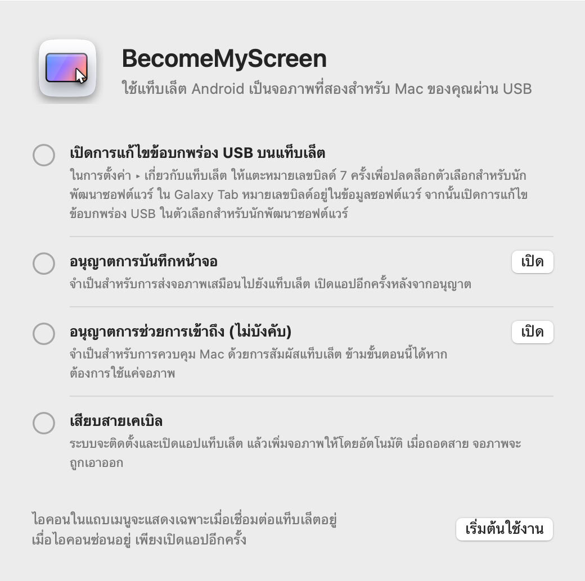
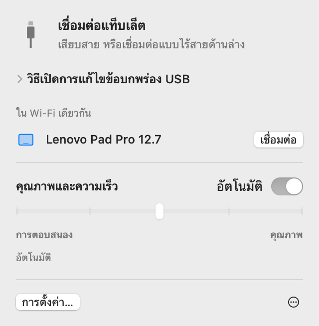
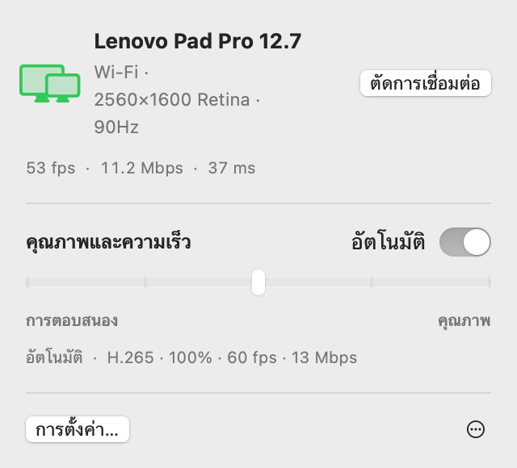
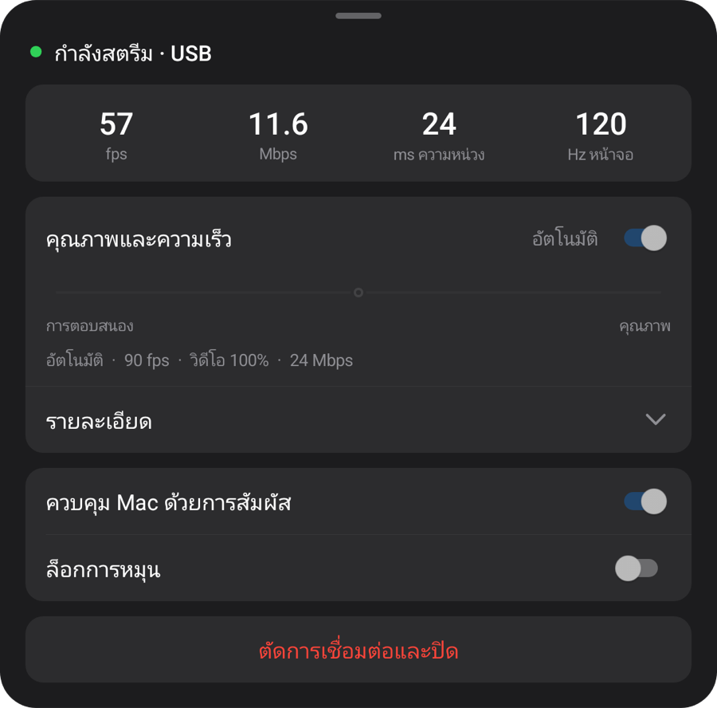
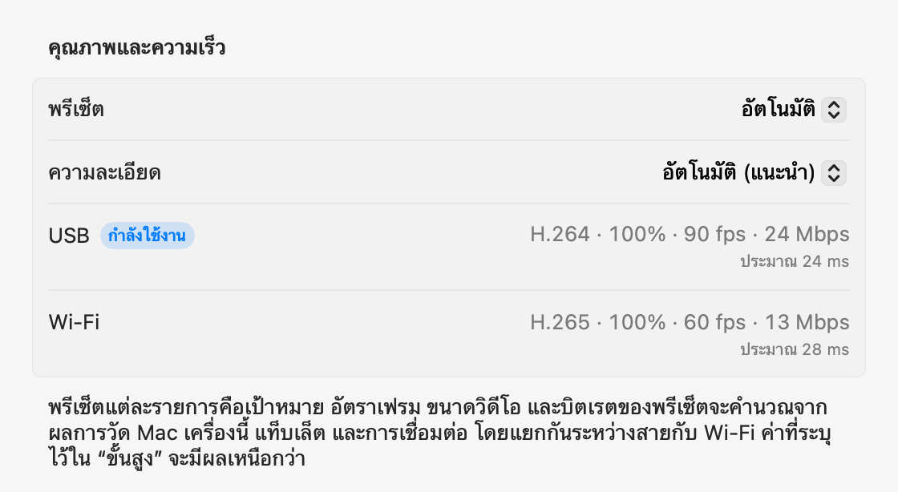

macOS + Windows
แท็บเล็ตของคุณ
หน้าจอคอมพิวเตอร์ของคุณ
ใช้แท็บเล็ต Android เป็นจอที่สองสำหรับ Mac หรือ Windows เมื่อเชื่อมต่อผ่าน USB แอปแท็บเล็ตจะติดตั้งและเปิดโดยอัตโนมัติ
เปิดไฟล์ zip ย้ายแอปไปไว้ในโฟลเดอร์แอปพลิเคชันแล้วเปิดแอป สำหรับการเชื่อมต่อครั้งแรก ดูที่ การติดตั้ง
เปิดหน้านี้บนคอมพิวเตอร์เพื่อดาวน์โหลดแอปสำหรับ Mac หรือ Windows

1.1.0
Windows
พร้อมให้ลองบน Windows 11 แอปเนทีฟสำหรับ Intel/AMD x64 และ ARM64 ในดาวน์โหลดเดียว

เปิดตัวติดตั้ง เชื่อมต่อแท็บเล็ตแล้วอนุญาตการแก้ไขข้อบกพร่อง USB ระบบจะดาวน์โหลดเอนจินวิดีโอเมื่อเปิดครั้งแรก
ค่าด้านล่างวัดบน Mac
การติดตั้ง
ตั้งค่าเพียงครั้งเดียว หลังจากนั้นเมื่อเสียบสาย จอภาพจะถูกเพิ่มเข้ามา และใน Wi‑Fi เดียวกันจะเชื่อมต่อได้โดยไม่ต้องใช้สาย
-
ติดตั้งแอป Mac
เปิดไฟล์ zip ที่ดาวน์โหลดมา ย้าย BecomeMyScreen ไปไว้ในโฟลเดอร์แอปพลิเคชันแล้วเปิดแอป อนุญาตการบันทึกหน้าจอ แล้วเปิดแอปอีกครั้ง
-
เปิดการแก้ไขข้อบกพร่อง USB บนแท็บเล็ต
ในการตั้งค่า › เกี่ยวกับแท็บเล็ต ให้แตะหมายเลขบิลด์เจ็ดครั้งเพื่อปลดล็อกตัวเลือกสำหรับนักพัฒนาซอฟต์แวร์ ใน Galaxy Tab หมายเลขบิลด์อยู่ในข้อมูลซอฟต์แวร์ จากนั้นเปิดการแก้ไขข้อบกพร่อง USB ในตัวเลือกสำหรับนักพัฒนาซอฟต์แวร์
-
เสียบสายเคเบิล
เมื่อแท็บเล็ตถามว่าจะอนุญาตการแก้ไขข้อบกพร่อง USB หรือไม่ ให้เลือก “อนุญาตจากคอมพิวเตอร์เครื่องนี้เสมอ” แล้วแตะ “อนุญาต” Mac จะติดตั้งและเปิดแอปแท็บเล็ต แล้วเพิ่มจอภาพ ไม่ต้องดาวน์โหลดแอปแท็บเล็ตแยกต่างหาก

ความเร็ว
เวลาตั้งแต่ Mac จับภาพหน้าจอจนถึงตอนที่แท็บเล็ตแสดงภาพนั้น วัดด้วย Lenovo Pad Pro 12.7 และ Mac ที่ใช้ M4 Pro
| ขนาดวิดีโอ | 60 fps | 120 fps |
|---|---|---|
| 100%2560×1600 | 20 ms | 24 ms |
| 75%1920×1200 | 14 ms | 19 ms |
| 50%1280×800 | 11 ms | 16 ms |
ตัวเข้ารหัสฮาร์ดแวร์ใน Apple silicon จะบีบอัดหน้าจอเป็น H.264 แล้วส่งผ่าน USB และตัวถอดรหัสฮาร์ดแวร์ของแท็บเล็ตจะแสดงแต่ละเฟรมทันทีที่ได้รับ ในการเชื่อมต่อครั้งแรก โหมดอัตโนมัติจะวัดว่าตัวถอดรหัสรองรับได้มากเท่าใด แล้วเลือกอัตราเฟรมสูงสุดที่ไม่ทำให้ล่าช้า สำหรับแท็บเล็ตนี้ระบบเลือก 90 fps
วิธีการวัด: หลังจากชดเชยความต่างของนาฬิการะหว่างอุปกรณ์ทั้งสองแล้ว เราวัดเวลาระหว่างที่ Mac จับภาพเฟรมหนึ่งกับที่แท็บเล็ตแสดงเฟรมนั้น
ไร้สาย
แท็บเล็ตที่เคยเชื่อมต่อผ่าน USB หนึ่งครั้งแล้วจะใช้งานแบบไร้สายใน Wi‑Fi เดียวกันได้ด้วย หากถอดสายขณะทำงาน หน้าจอจะทำงานต่อผ่าน Wi‑Fi
- การเชื่อมต่อ
- เปิดแอปบนแท็บเล็ต แล้วแท็บเล็ตจะปรากฏในรายการ “ใน Wi‑Fi เดียวกัน” บนแถบเมนูของ Mac คลิก “เชื่อมต่อ” แล้วหน้าจอจะแสดงขึ้น
- การถอดสาย
- ระบบจะเปลี่ยนไปใช้ Wi‑Fi ภายในหนึ่งวินาที จอภาพเสมือนและการจัดวางหน้าต่างของคุณยังคงเหมือนเดิม และเมื่อเสียบสายกลับ ระบบจะกลับไปใช้ USB
- ความปลอดภัย
- คีย์สำหรับการเชื่อมต่อไร้สายจะแลกเปลี่ยนผ่านสาย USB เท่านั้น การเชื่อมต่อจะเกิดขึ้นหลังจากตรวจสอบคีย์แล้วเท่านั้น และทั้งหน้าจอและการป้อนข้อมูลจะเข้ารหัสด้วย AES-256-GCM
- การปรับจังหวะอัตโนมัติ
- แท็บเล็ตจะยืนยันทุกเฟรมที่ได้รับ และ Mac จะข้ามเฟรมเท่ากับจำนวนที่ล่าช้าไปพร้อมปรับบิตเรต แม้ Wi‑Fi จะช้าลงชั่วครู่ ความหน่วงก็จะไม่สะสม


| การเชื่อมต่อ | ความหน่วง | หมายเหตุ |
|---|---|---|
| USB | ประมาณ 20–25 ms | อัตราเฟรมสูงสุดของแท็บเล็ต |
| Wi‑Fi 5 GHz | 40–55 ms | 60 fps; บิตเรตจะเพิ่มขึ้นอัตโนมัติจนถึงค่าคุณภาพที่ตั้งไว้ |
| Wi‑Fi 2.4 GHz | 40–65 ms | บางครั้งความหน่วงพุ่งเกิน 100 ms ซึ่งอาจทำให้ดูกระตุก |
วัดด้วย Lenovo Pad Pro 12.7 ที่ 2560×1600 โดยเนื้อหาบนหน้าจอเปลี่ยนแปลงตลอดเวลา หากแท็บเล็ตใช้ Wi‑Fi 2.4 GHz แอปจะแนะนำให้เปลี่ยนไปใช้ 5 GHz
คุณภาพและการตอบสนอง
เลือกหนึ่งในห้าระดับ หรือปล่อยไว้ที่อัตโนมัติ ปรับได้จากแถบเมนูของ Mac หรือจากเมนูบนแท็บเล็ต และทั้งสองฝั่งจะเปลี่ยนตามกัน
| พรีเซ็ต | อัตราเฟรม | ขนาดวิดีโอ | บิตเรต |
|---|---|---|---|
| อัตโนมัติ | 90 fps | 100% | 24 Mbps |
| 1ตอบสนองเร็วที่สุด | 120 fps | 50% | 8 Mbps |
| 2ตอบสนองเร็ว | 120 fps | 75% | 14 Mbps |
| 3สมดุล | 90 fps | 100% | 24 Mbps |
| 4คุณภาพสูง | 90 fps | 100% | 33 Mbps |
| 5คุณภาพสูงสุด | 60 fps | 100% | 39 Mbps |
วัดด้วย Lenovo Pad Pro 12.7 (2560×1600, 120 Hz) ผ่าน USB บน Mac ที่ใช้ M4 Pro พรีเซ็ตแต่ละรายการคือเป้าหมาย บน Mac หรือแท็บเล็ตเครื่องอื่น รวมถึงเมื่อใช้ Wi‑Fi พรีเซ็ตจะคำนวณค่าของตัวเองจากผลการวัด “อัตโนมัติ” เหมือนกับ “สมดุล”
ขนาดวิดีโอตั้งค่าแยกจากความละเอียดที่ Mac เห็น วิดีโอที่เล็กลงยังคงเต็มหน้าจอแท็บเล็ต และช่วยลดภาระของตัวถอดรหัสและลดความหน่วงลงตามสัดส่วน
ในการเชื่อมต่อครั้งแรก แอปจะวัดสาย ตัวเข้ารหัสวิดีโอของ Mac เครื่องนี้ และตัวถอดรหัสของแท็บเล็ตในทุกโหมดที่รองรับ โดยใช้เวลาประมาณ 10 วินาที ส่วนในการเชื่อมต่อผ่าน Wi‑Fi ครั้งแรก แอปจะวัดเครือข่าย พรีเซ็ตทุกรายการจะปรับให้เข้ากับค่าเหล่านี้โดยแยกกันระหว่างสายกับ Wi‑Fi และคุณสามารถระบุค่าใดก็ได้สำหรับแต่ละการเชื่อมต่อในการตั้งค่าขั้นสูง หากสายช้า แอปจะแจ้งให้คุณเปลี่ยนสาย


การสัมผัส
เมื่อสัมผัสแท็บเล็ต Mac จะรับเป็นการป้อนข้อมูลจากเมาส์ ฟีเจอร์นี้จะทำงานเมื่อคุณอนุญาตการช่วยการเข้าถึงบน Mac
| บนแท็บเล็ต | บน Mac |
|---|---|
| แตะ | คลิก |
| ลาก | ลาก |
| ลากด้วยสองนิ้ว | เลื่อน |
| แตะด้วยสองนิ้ว | คลิกขวา |
| แตะด้วยสามนิ้ว | เปิดเมนูบนแท็บเล็ต |
| วาดด้วยปากกา | ส่งไปยัง Mac เป็นการป้อนข้อมูลแท็บเล็ตกราฟิก พร้อมแรงกดและความเอียง |
| วางปากกาหรือเมาส์ลอยเหนือหน้าจอ | เลื่อนตัวชี้ สัมผัสขณะกดปุ่มปากกาค้างไว้เพื่อคลิกขวา |
ตัวชี้ที่กลับไปยังตำแหน่งเดิม
เมื่อคุณสัมผัสแท็บเล็ต ตัวชี้ของ Mac จะย้ายไปยังจุดนั้น หลังจากนั้นเมื่อขยับเมาส์เล็กน้อย ตัวชี้จะกลับไปยังตำแหน่งก่อนการสัมผัส คุณจึงไม่ต้องลากตัวชี้กลับไปยังงานที่ทำอยู่บนจอภาพหลัก คุณปิดฟีเจอร์นี้ได้ในการตั้งค่า
รายละเอียด
- ไอคอนในแถบเมนู
-
ไอคอนจะแสดงเฉพาะเมื่อเชื่อมต่อแท็บเล็ตอยู่ เมื่อไอคอนซ่อนอยู่ ให้เปิดแอปอีกครั้ง แล้วไอคอนจะปรากฏชั่วครู่พร้อมเปิดแผงไว้
- รอ
- กำลังเตรียม
- กำลังใช้งาน
- ต้องตรวจสอบ
- การเปิดแอปแท็บเล็ต
- หากแอปแท็บเล็ตไม่ได้ทำงานอยู่เมื่อคุณเสียบสาย Mac จะเปิดแอปให้ และปลุกหน้าจอหากหน้าจอปิดอยู่ แต่จะไม่ข้ามหน้าจอล็อกเลย
- การอัปเดต
- แอป Mac จะตรวจหาเวอร์ชันใหม่และอัปเดตตัวเองเมื่อคุณเลือก หากมีแอปแท็บเล็ตที่ใหม่กว่ามาด้วย แท็บเล็ตจะได้รับการอัปเดตผ่านสายก่อนเริ่มแสดงผล
- แนวตั้ง
- หมุนแท็บเล็ตเป็นแนวตั้ง แล้วจอภาพเสมือนจะถูกสร้างใหม่เป็นแนวตั้งด้วย
- อัตรารีเฟรชและการปิดหน้าจอ
- ระหว่างสตรีม อัตรารีเฟรชของแท็บเล็ตจะถูกคงไว้ไม่ให้ลดลงเหลือ 60 Hz และหน้าจอจะไม่ดับ
- การตรวจสอบสาย
- หาก USB เชื่อมต่อที่ความเร็วต่ำกว่า 480 Mbps การรับส่งข้อมูลต่ำกว่า 8 MB/s หรือการเชื่อมต่อขาดหายสามครั้งภายในสามนาที แอปจะแนะนำให้ลองใช้สายหรือพอร์ตอื่น
- เมื่อการเชื่อมต่อขาดหาย
- หากสายหลุด หน้าจอจะทำงานต่อผ่าน Wi‑Fi หากทำงานต่อแบบไร้สายไม่ได้ จอภาพเสมือนจะถูกคงไว้ครู่หนึ่ง และหากแท็บเล็ตเชื่อมต่อใหม่ในช่วงเวลานั้น การจัดวางหน้าต่างของคุณจะยังคงเหมือนเดิม
- “ตัดการเชื่อมต่อ” และ “เชื่อมต่อใหม่”
- คลิก “ตัดการเชื่อมต่อ” ในแถบเมนู แล้วหน้าจอของแท็บเล็ตจะถูกพักไว้แม้ยังเสียบสายอยู่ คลิก “เชื่อมต่อใหม่” เพื่อใช้งานต่อ
- แอปแท็บเล็ตปิดตัวเอง
- เมื่อไม่มีอะไรเสียบอยู่กับแท็บเล็ตเลย แม้แต่ที่ชาร์จ แอปแท็บเล็ตจะปิดตัวเองหลังจาก 10 วินาที หากรอการเชื่อมต่อไร้สายได้ แอปจะรอ 2 นาทีแทน
ข้อกำหนด
- Mac
- Mac ที่ใช้ Apple silicon, macOS 14 ขึ้นไป
- Windows
- Windows 11 · Intel / AMD x64 · ARM64 · Windows
- แท็บเล็ต
- Android 8.0 ขึ้นไป บนอุปกรณ์ที่เปิดการแก้ไขข้อบกพร่อง USB ได้
- สายเคเบิล
- สาย USB ที่รองรับการรับส่งข้อมูล สายที่ใช้ชาร์จได้อย่างเดียวจะเชื่อมต่อไม่ได้ พอร์ตบนตัว Mac เสถียรกว่าฮับ
- ไร้สาย
- Mac และแท็บเล็ตต้องอยู่ใน Wi‑Fi เดียวกัน แนะนำให้ใช้ 5 GHz การเชื่อมต่อครั้งแรกต้องทำผ่าน USB
- สิทธิ์บน Mac
- การบันทึกหน้าจอ รวมถึงการช่วยการเข้าถึงเพื่อควบคุม Mac ด้วยการสัมผัส และเครือข่ายเฉพาะที่เพื่อใช้งานแบบไร้สาย
คำถามที่พบบ่อย
Windows
หาก Windows ARM64 บล็อกไดรเวอร์ ให้ใช้ Start-Mirroring.cmd ใน ZIP เพื่อสะท้อนหน้าจอ บันทึกรุ่นและข้อจำกัด
ต้องติดตั้งแอปบนแท็บเล็ตหรือไม่
ไม่ต้อง แอปแท็บเล็ตมาพร้อมกับแอป Mac เมื่อคุณเสียบสาย Mac จะติดตั้งและเปิดแอปให้ และเมื่อคุณอัปเดตแอป Mac แอปแท็บเล็ตจะได้รับการอัปเดตไปด้วยในการเชื่อมต่อครั้งถัดไป
ใช้งานผ่าน Wi‑Fi ได้หรือไม่
ได้ หลังจากเชื่อมต่อผ่าน USB หนึ่งครั้ง ครั้งต่อๆ ไปจะเชื่อมต่อแบบไร้สายใน Wi‑Fi เดียวกันได้ เปิดแอปบนแท็บเล็ตแล้วคลิก “เชื่อมต่อ” ในแถบเมนูของ Mac หรือเพียงถอดสายขณะใช้งาน ความหน่วงจะสูงกว่าผ่าน USB เล็กน้อย (40–55 ms บน 5 GHz) และ Wi‑Fi 2.4 GHz อาจกระตุกเป็นครั้งคราว จึงแนะนำให้ใช้ 5 GHz
ทำไมการเชื่อมต่อครั้งแรกต้องทำผ่าน USB
เพราะคีย์สำหรับการเชื่อมต่อไร้สายจะแลกเปลี่ยนผ่านสายเท่านั้น ด้วยวิธีนี้ อุปกรณ์อื่นใน Wi‑Fi เดียวกันจึงแอบอ้างเป็นแท็บเล็ตของคุณเพื่อเชื่อมต่อกับ Mac ไม่ได้ แอปแท็บเล็ตก็จะถูกติดตั้งในตอนนั้นด้วย
รองรับแรงกดปากกาหรือไม่
รองรับ แรงกดและความเอียงของปากกาจะส่งไปยัง macOS เป็นการป้อนข้อมูลแท็บเล็ตกราฟิก (แรงกด ความเอียง และระยะใกล้) เนื่องจากใช้การป้อนข้อมูลสไตลัสมาตรฐานของ Android ทั้ง S Pen และปากกา Lenovo จึงไม่ต้องใช้ SDK หรือไดรเวอร์เพิ่มเติม ทดสอบแล้วกับปากกาสำหรับ Lenovo Pad Pro 12.7
ใช้กับแท็บเล็ตรุ่นใดได้บ้าง
ใช้ได้กับแท็บเล็ตทุกรุ่นที่ใช้ Android 8.0 ขึ้นไปและเปิดการแก้ไขข้อบกพร่อง USB ได้ การพัฒนาและการวัดทำบน Lenovo Pad Pro 12.7 (2944×1840, 120 Hz) ส่วนอุปกรณ์อื่นยังไม่ได้ทดสอบด้วยตัวเอง ความละเอียดและแนวของจอภาพเสมือนจะเป็นไปตามหน้าจอของแท็บเล็ตเมื่อเชื่อมต่อ
ทำไมไม่มีใน App Store
การสร้างจอภาพเสมือนต้องใช้ฟีเจอร์ที่ไม่เปิดเผยต่อสาธารณะของ macOS จึงเผยแพร่บน App Store ไม่ได้ แต่แอปได้รับการเซ็นด้วยใบรับรองนักพัฒนาของ Apple และผ่านการรับรองจาก Apple จึงเปิดได้ทันทีหลังดาวน์โหลด
ทำไมต้องใช้การบันทึกหน้าจอและการช่วยการเข้าถึง
การบันทึกหน้าจอใช้จับภาพจอภาพเสมือนเพื่อส่งไปยังแท็บเล็ต การช่วยการเข้าถึงใช้แปลงการสัมผัสและปากกาบนแท็บเล็ตเป็นการป้อนข้อมูลของ Mac และเครือข่ายเฉพาะที่ใช้ค้นหาแท็บเล็ตใน Wi‑Fi เดียวกัน หน้าจอจะส่งผ่านสาย USB หรือภายใน Wi‑Fi ของคุณเท่านั้น (เข้ารหัสเมื่อใช้แบบไร้สาย) และไม่ออกไปยังอินเทอร์เน็ต
การเชื่อมต่อขาดหายบ่อย
ลองใช้สายอื่นที่รองรับการรับส่งข้อมูล หรือเสียบเข้ากับพอร์ตบน Mac โดยตรงแทนการใช้ฮับ แอปจะแจ้งให้ทราบก่อนเมื่อ USB เชื่อมต่อได้ช้าหรือขาดหายบ่อย หลังจากการเชื่อมต่อขาดหายช่วงสั้นๆ จอภาพเสมือนจะถูกคงไว้ 15 วินาทีและทำงานต่อจากจุดเดิม
ถ้าแท็บเล็ตล็อกอยู่จะเป็นอย่างไร
Mac จะปลุกหน้าจอและเปิดแอป แต่จะไม่ข้ามการล็อกเลย ปลดล็อกด้วย PIN หรือรูปแบบของคุณ แล้วแท็บเล็ตจะเชื่อมต่อทันที
ใช้กับ Mac ที่ใช้ Intel ได้หรือไม่
รุ่นปัจจุบันรองรับเฉพาะ Mac ที่ใช้ Apple silicon
ดาวน์โหลด
เปิดหน้านี้บนคอมพิวเตอร์เพื่อดาวน์โหลดแอปสำหรับ Mac หรือ Windows
เปิดไฟล์ zip ย้ายแอปไปไว้ในโฟลเดอร์แอปพลิเคชันแล้วเปิดแอป สำหรับการเชื่อมต่อครั้งแรก ดูที่ การติดตั้ง